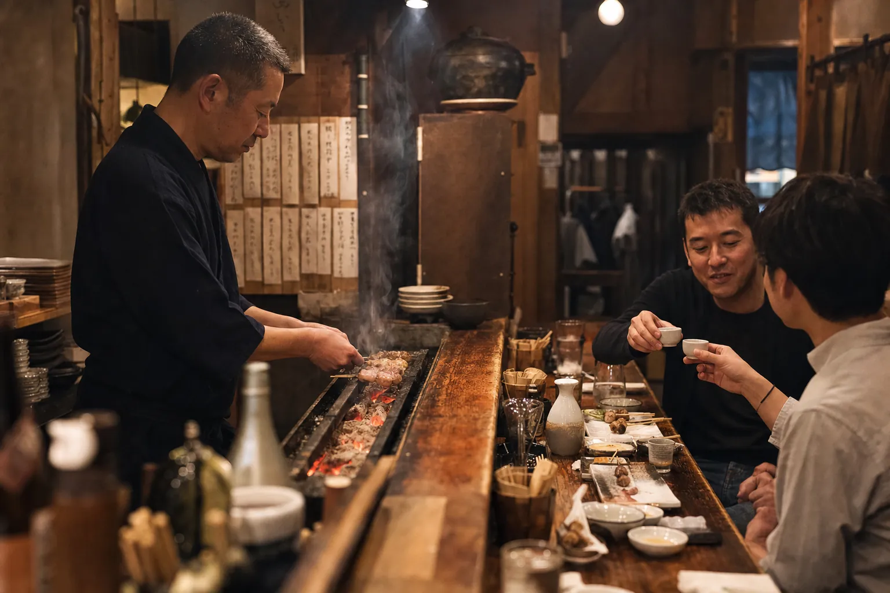

粗挽き月見つくね
噛むたびに肉汁。卵黄は最後のひと口まで残してもいい。
名物
写真映えのためではなく、食べる瞬間のために焼く。
迷ったら、まずこの三本から。
噛むたびに肉汁。卵黄は最後のひと口まで残してもいい。
外は香ばしく、中はふっくら。火入れの基準になる一本。
その日いちばんの部位を、いちばんの焼き加減で。

手仕事
火の強い場所、弱い場所。肉の水分、その日の気温。数字にできない小さな差を、手で見ながら一本ずつ返します。
「今日はちょっと、
いい一杯を。」
そんな夜のために。
ご予約